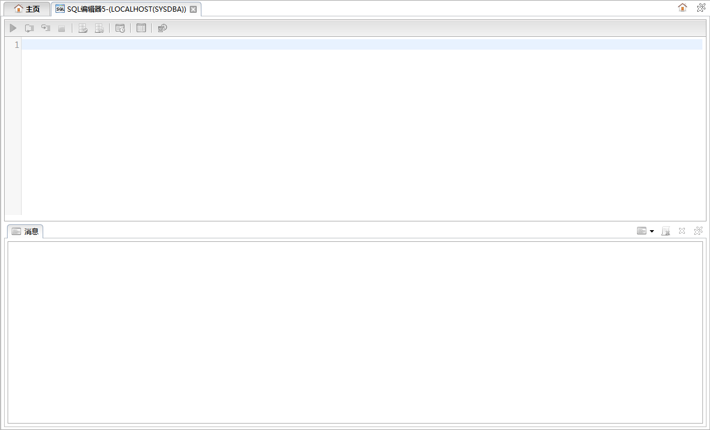

停止
停止SQL查询面板用来执行SQL语句并显示相关结果集。如下图所示:

SQL查询面板主要由以下几个部分组成。
查询面板包括功能按钮和输入面板，如下图所示:
功能按钮列表
| 按钮 | 说明 |
|---|---|
| 执行 | 执行SQL语句。 |
| 批量执行 | 批量执行SQL语句。 |
| 单步执行 | 单步执行SQL语句。 |
| 停止 |
停止执行SQL语句。 |
| 提交 | 提交SQL语句。 |
| 回滚 | 回滚SQL语句。 |
| 显示执行计划 | 显示SQL语句的执行计划。 |
| 显示自动跟踪结果 | 打开自动跟踪对话框，显示自动跟踪结果。 |
| 执行回闪查询 | 打开闪回查询条件对话框，执行回闪查询。 |
输入面板右键菜单，如下图所示:
右键菜单列表
| 操作 | 说明 |
|---|---|
| 撤销 | 撤销上一次修改。 |
| 还原 | 还原上一次撤销。 |
| 保存 | 保存当前SQL内容到本地文件。 |
| SQL脚本 | SQL脚本子菜单包括以下功能:增加缩进、减少缩进、格式化、注释、增加块注释、减少块注释、转换成大写、转换成小写、删除、向上复制行、向下复制行、上移行、下移行。 |
| 选项 | 打开首选项对话框 |
消息与结果集面板包括消息面板、执行计划面板和结果集面板，如下图所示:

| 操作 | 说明 |
|---|---|
| 选择显示类别 | 选择显示消息的类别，包括：全部、错误消息和正确消息。 |
| 清空 | 清空消息。 |
| 关闭 | 关闭当前面板(消息面板不可用)。 |
 关闭所有 关闭所有 |
关闭所有面板(消息面板除外)。 |
| 操作 | 说明 |
|---|---|
| 选择显示类别 | 选择显示消息的类别，包括：表格显示和文本显示。 |
| 关闭 | 关闭当前面板(消息面板不可用)。 |
| 关闭所有 |
关闭所有面板(消息面板除外)。 |
| 操作 | 说明 |
|---|---|
| 关闭 | 关闭当前面板(消息面板不可用)。 |
| 关闭所有 |
关闭所有面板(消息面板除外)。 |
 编辑数据 编辑数据 |
点击可编辑结果集数据，点击，可保存已修改数据。 |
 增加一行 增加一行 |
增加一行结果集数据，值为空。 |
| 删除一行 | 删除一行结果集数据 |
| 保存 | 保存修改 |
 取消修改 取消修改 |
取消修改 |
| 第一行 | 选中结果集第一行 |
| 前一行 | 选中前一行 |
| 下一行 | 选中下一行 |
| 下一行 | 选中结果集最后一行 |
| 更多记录 | 获取更多记录 |
 全部记录 全部记录 |
获取更多记录 |
| 停止 |
停止获取记录 |
| 单记录显示 | 在对话框中显示选中行的数据 |
 刷新 刷新 |
刷新数据 |